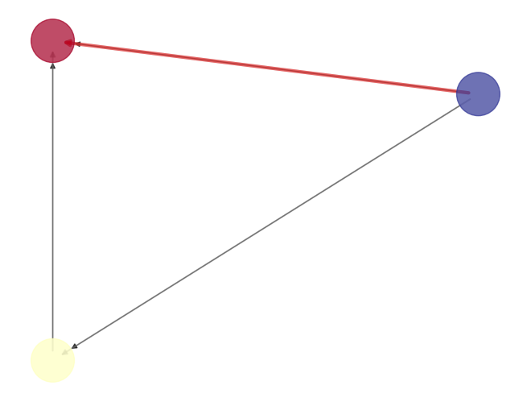

OPF tries to allocate available generation to meet the current load while keeping transmission lines within the limits of what they can carry. OPF adds a dimension of space to the ED problem. Currently minpower performs the simplest version of power flow, called decoupled OPF and considers only real power [1]. The classic text is Bergen & Vittal.
\(\min \sum_g C_g(P_g)\)
\(\mathrm{s.t.} \; P_{\min (g)} \leq P_g \leq P_{\max (g)} \; \forall \; \mathrm{generators} \;(g)\)
\(\mathrm{s.t.} \; P_{\mathrm{gen} (i)} - P_{\mathrm{load} (i)} - \sum_j P_{ij} = 0 \; \forall \; \mathrm{buses} \;(i)\)
\(\mathrm{s.t.} \; P_{\min (ij)} \leq P_{ij} \leq P_{\max (ij)} \forall \; \mathrm{lines} \;(ij)\)
In this mathematical formulation generators are indexed by \(g\). \(P_g\) is a generator’s power output and \(C_g()\) is its cost function. The objective is to minimize the total cost. There are three constraints:
For DCOPF, the real power flow on a line \(P_{ij} = \frac{1}{X_{ij}} \left( \theta_i-\theta_j \right)\) depends linearly on the voltage angles of the buses it connects (\(\theta_{i}\), \(\theta_{j}\)) and its own reactance \(X_{ij}\). Bus angles are the difference in voltage angle between the bus and the reference bus which has angle \(0^{\circ}\).
Let’s say you have made a folder called mypowerflow and put the information about your problem in the folder. Then if you run the script:
from minpower import solve
solve.problem('mypowerflow/')
OPF is difficult to visualize (please send suggestions), but here is what minpower creates:

There are also spreadsheet outputs of generator and line information:
generator name, u, P, IC cheap, True, 0.667, 5.013334 mid grade, True, 57.6667, 8.153334 expensive, True, 41.6667, 10.833334
Each generator’s real power output (P) and incremental cost (IC) is output. Because this is a power flow each generator is on (u=True) unless specified in the input spreadssheet.
from, to, power, congestion shadow price Seattle, Tacoma, -3.0, 13.7499 Olympia, Tacoma, 2.33333, 0.0 Olympia, Seattle, 5.33333, 0.0
Each line’s real power flow is output. Lines that have congestion will show a positive shadow price. Because the flow is Tacoma \(\rightarrow\) Seattle and the from/to fields of the spreadsheet are the other way around, we see a negative power flow. The Seattle-Tacoma line is at its limit, so there is an extra cost to the system from the congestion and the line has a positive shadow price.
These outputs are saved in the mypowerflow folder as powerflow.png, powerflow-generators.csv, and powerflow-lines.csv.
minpower just looks for the files in the mypowerflow directory that describe the generators, loads, and lines.
Tell it the specifics of your problem by editing the generator file (generators.csv):
name, bus, cost curve equation cheap, Tacoma, 5P + .01P^2 mid grade, Olympia, 7P + .01P^2 expensive, Seattle, 10P + .01P^2
the loads file (loads.csv):
name, bus, P UW, Seattle, 50 paper mill, Tacoma, 0 smelter, Olympia, 50
the lines file (lines.csv):
From, To, Pmax Seattle, Tacoma, 3 Olympia, Tacoma, 10000 Olympia, Seattle, 10000
Note
For more information about what options you can specify in each spreadsheet see: Data Input.
Footnotes
| [1] | Modern power systems often have reactive power issues. While DCOPF is a decent approximate solution with reactive power considered, your results may vary significantly from reality without it. |